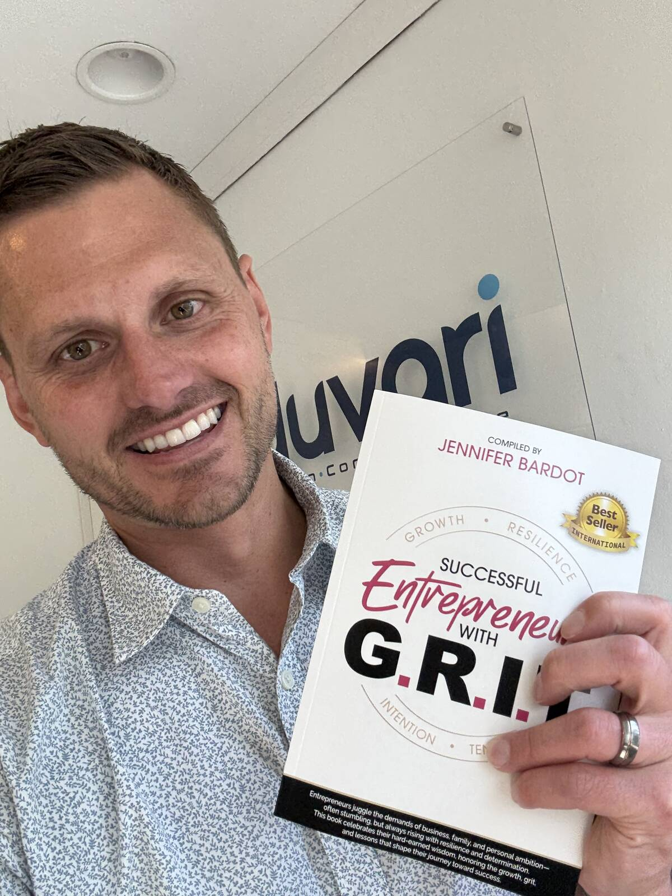
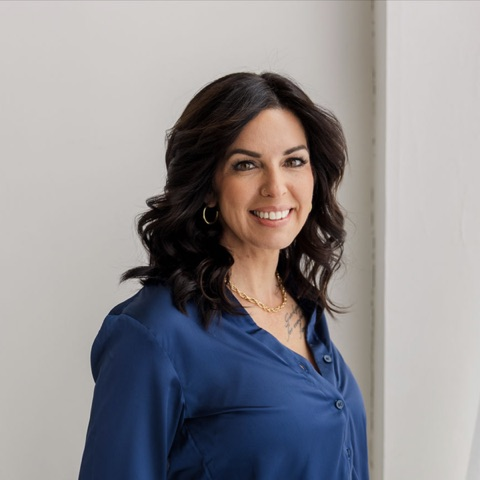
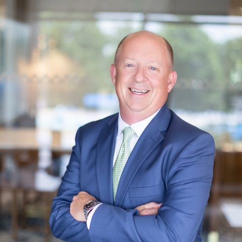
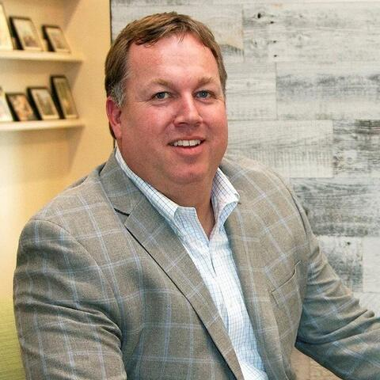

Our Story
Shaun's life is the inspiration for this work, but God is its foundation.

Why Shaun?
Shaun was a servant leader not because of a title, but because of how he lived. He listened to people. He wanted to know their story and understand their why. He noticed potential, loved helping the underdog, encouraged entrepreneurs, and was energized by seeing someone receive an opportunity they might not otherwise have had.
If Shaun could help, he did. If he could not, he often tried to connect that person with someone who could. He believed relationships could create community and continue producing positive impact long after the first conversation.
God is the foundation of everything we do.
The Shaun Duvall Legacy Foundation exists because of the life Shaun lived, but it does not exist to glorify Shaun. Whether he was in a business meeting, sharing a meal, talking with a friend, mentoring someone, or helping someone find their way, Shaun consistently pointed everything back to God. He prayed with and over people. He wanted God to receive the glory rather than himself.
We believe the relationships, gifts, opportunities, resources, businesses, and influence entrusted to us are not simply ours to keep. They are opportunities to serve. The Foundation will openly operate from Christian principles, while recipients are not required to identify as Christian. We serve people because of Who we serve.
To serve Him is to serve them.
Romans 5:3–5
- Suffering
- Perseverance
- Character
- Hope
Romans 5:3–5
The Foundation will not be defined by how Shaun died. It will tell people how Shaun lived, while demonstrating that profound loss can be turned outward into hope, service, relationship, and opportunity.
Romans 5:3–5 has been a family verse and now provides a meaningful framework for the Foundation: difficult circumstances do not have to have the final word. God can work through suffering to produce perseverance, character, and hope.
2 Corinthians 1:4 adds another dimension: comfort received in suffering can equip us to comfort and serve others.
How We Lead
God Gets the Glory
He is the foundation. We steward our gifts, resources, relationships, businesses, and influence in service to others and point the credit back to God.
Serve First
To serve Him is to serve them. We look for the person who needs encouragement, an opportunity, a connection, or simply someone willing to show up.
Relationships Over Numbers
Know their story, their why. Numbers can tell us how much we gave. Relationships tell us what happened because we gave. We listen, connect intentionally, and walk alongside people.
Lead by Example
SHOW UP. Servant leadership is lived daily. We lead with humility, integrity, responsibility, and action, getting beside people and serving.
See the Potential
Sometimes someone just needs a little more help. We look beyond the most polished résumé, highest GPA, biggest network, or person with every advantage and ask what might happen if someone believed in them.
Multiply the Impact
What was invested in you shouldn't end with you. We invest in people with the hope that they will someday invest in someone else.

Logo Meaning
The logo is inspired by the story of David and Goliath.
The sling represents faith, courage, and being equipped to face what seems bigger than you. It reflects the Foundation's purpose: to invest in young people, help prepare them, and then send them forward to lead, serve, and make an impact of their own.
Our Board & Family
The Foundation is founder-led and mission-protected. The Founder/President serves as the primary steward of the founding vision while the board provides governance, accountability, perspective, community relationships, fundraising support, and shared responsibility for major organizational decisions.
-

Cascea Duvall
Founder & President
Cascea founded The Shaun Duvall Legacy Foundation with a simple hope: that the way Shaun loved, served, led, and invested in people would not end with his life, but be a positive lasting impact through the lives of others.
An entrepreneur and business owner for more than two decades, Cascea has spent much of her career leading, mentoring, and helping others grow. Her faith and life experiences have shaped a deep belief that relationships matter more than numbers and that one intentional investment in a person can create an impact far beyond what we may ever see.
As Founder and President, Cascea is committed to carrying that vision forward by investing in young servant leaders and entrepreneurs, challenging them to do the same for someone else.
-
Carrie Ann (Duvall) Newell
Founding Director & Vice President
Carrie helped establish The Shaun Duvall Legacy Foundation with a deeply personal purpose: to honor her brother Shaun by continuing the legacy of faith, kindness, generosity, and servant leadership that defined his life. As Shaun's sister, Carrie had the privilege of seeing firsthand the way he loved people, believed in others, and used his life and his success to make a difference. Shaun never measured his impact simply by what he accomplished, but by the lives he touched and the people he helped become better, stronger, and more confident in their own purpose.
Carrie brings her own passion for serving others, along with a career dedicated to caring for and advocating for people. Her faith in Jesus and her love for her brother inspire her commitment to ensuring Shaun's legacy continues to reach others.
As Founding Director and Vice President, Carrie is committed to keeping Shaun's story alive, not simply by remembering who he was, but by living out what he believed: that we are called to love others well, serve selflessly, invest in people, and leave the world better than we found it.
-

Dan Sherman
Founding Director
As a dear friend and brother in Christ to Shaun, Dan deeply understands and embraces the significance of establishing The Shaun Duvall Legacy Foundation. As a Founding Director, he is passionate about advancing the Foundation's mission to make a lasting impact through community and selfless acts of service that create meaningful opportunities for others.
Professionally, Dan brings more than 30 years of experience in technology, executive leadership, consulting, and organizational development across both for-profit and nonprofit organizations. He currently serves as Chief Technology Officer at Moneta and as an Adjunct Professor in the Master of Engineering program at Washington University in St. Louis. Throughout his career, Dan has held numerous consulting and advisory roles and has founded two companies.
Beyond his professional accomplishments, Dan's relationship with Shaun was rooted in a deep friendship, shared faith, and a genuine commitment to serving others. It is this personal connection, combined with his professional experience and passion for making a difference, that makes Dan honored to serve as a Founding Director of The Shaun Duvall Legacy Foundation.
-

Gary Baker
Founding Advisor — Mentorship & Leadership Development
Gary Baker has spent more than 20 years helping others live exceptional lives, building his career around a commitment to relationships, leadership, and what matters most to the people he serves.
As Managing Partner and President of Undivided Wealth Management, Gary founded both Undivided Wealth Management and the Undivided Experience Center, creating an environment focused on meaningful connections, personal growth, and helping others achieve their goals.
Throughout his career, Gary has been recognized for his leadership and contributions to the financial services industry, including recognition from AdvisorHub in 2022 and multiple Kestra Financial awards in 2019, 2021, and 2022. He has also served on industry boards and advisory councils.
Gary earned his bachelor's degree from the University of Missouri–Columbia and his MBA from Washington University in St. Louis. His passion for developing future leaders extends into education, where he has served as an adjunct professor at Washington University and MBA Capstone Mentor at Saint Louis University.
As Founding Advisor over the Mentorship & Leadership Development with The Shaun Duvall Legacy Foundation, Gary brings his experience, relationships, and dedication to investing in the next generation of servant leaders. His commitment to mentorship aligns with the Foundation's mission of helping young people grow in character, confidence, leadership, and service.
Above all, Gary is a devoted husband to Sarah and proud father to Jack, Charlie, and Abbey.